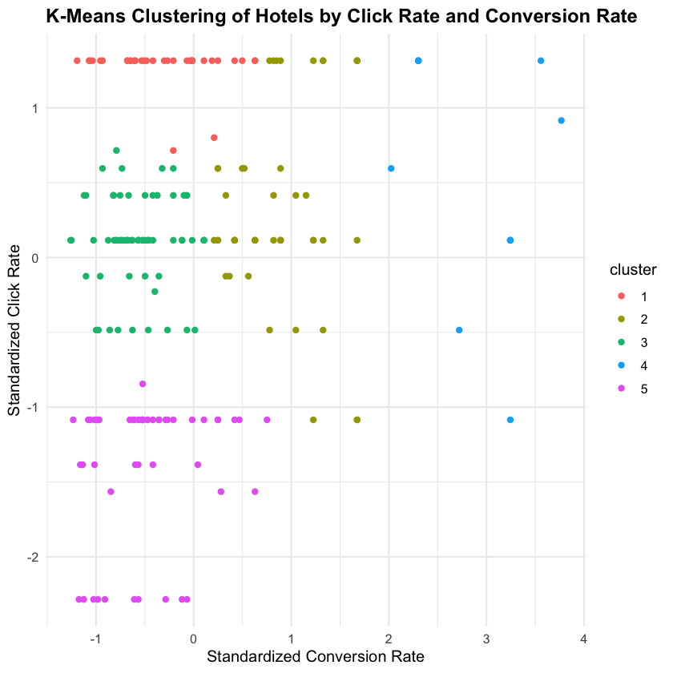
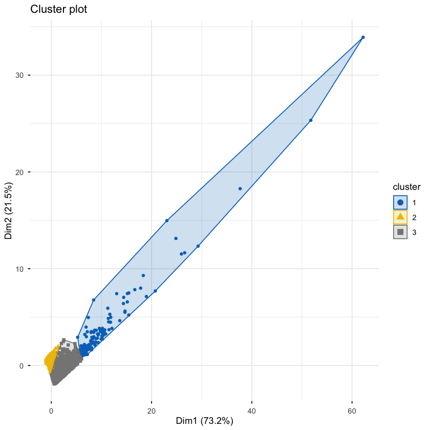

Class 7 知识点总结¶
Class 7 的内容是描述性分析，关注的是两种分群方法的思路，以及它们之间的对比：
- 描述性分析的概念
- 基于规则的分群：课上以 RFM 为例，按照规则把客户分群
- 基于数据的分群：K-Means 分群，利用算法在数据中自动发现客户群体
- 两种方法的比较
1. 描述性分析¶
描述性分析的概念我们在 Class 1 已经学过：
- 描述性分析关注的是过去发生了什么，汇总、描述历史数据，找出规律和趋势
- 描述性分析不预测未来，也不解释因果关系
- 常见形式包括报告、可视化仪表盘、数据摘要等
而本章的描述性分析关注在了将数据分群：
-
首先来说，分群和我们上面介绍的描述性分析的概念是不冲突的：
- 我们依然是描述历史数据，不预测也不解释因果
- 只不过是把数据分群之后，描述每个群体的历史特征和行为
-
其次要知道，分群是指人为地把数据分成抽象的群体：
- 有些群体的边界很明确，这些不用我们去分，比如性别（男/女）、年龄段（成年/未成年）
- 有些群体的边界不明确，这是我们本章的重点，这些需要我们用分群方法去发现，比如高价值客户 vs 低价值客户
2. 基于规则的分群¶
规则驱动分群：分析师根据业务经验，按事先设定规则划分，把数据分为不同的群体，例如：
- 消费总金额大于 1000 元的客户就是 VIP 客户，否则就是普通客户
- 最近一次购买距离现在 12 个月以内的客户就是活跃客户，否则就是流失客户
我们课上举的例子是 RFM 客户分群方式：
| 指标 | 英文 | 含义 | 方向 |
|---|---|---|---|
| R 近度 | Recency | 距离最近一次购买过去了多久 | 越小越好（越近越好） |
| F 频率 | Frequency | 一共购买了多少次 | 越大越好 |
| M 金额 | Monetary | 总共消费了多少钱 | 越大越好 |
- RFM 分群第 1 步：统计每个客户的 R、F、M 指标
customer_aggregates <- purchases |>
group_by(users_id) |>
summarise(
last_purch_date = max(date), # 最近一次购买的日期
frequency = n(), # 订单数
monetary = sum(amt) # 总金额
) |>
mutate(
recency = interval(last_purch_date, analysis_date) %/% months(1) # 根据最近一次购买日期计算距今的月份数
)
- RFM 分群第 2 步：统计每个客户的 R、F、M 档位
rfm_data <- customer_aggregates |>
mutate(
r_tile_rev = ntile(recency, 5),
f_tile = ntile(frequency, 5),
m_tile = ntile(monetary, 5)
) |>
mutate(
r_tile = max(r_tile_rev) - r_tile_rev + 1 # 把 R 的分数反转
)
- RFM 分群第 3 步：组合 R、F、M 的得分，用规则定义客户群体
rfm_segmented <-
rfm_data |>
mutate(
segment = case_when(
r_tile == 5 & f_tile == 5 & m_tile == 5 ~ "Champions",
r_tile %in% 3:5 & f_tile %in% 3:5 & m_tile %in% 2:5 ~ "Potential Loyalist",
r_tile %in% 2:4 & f_tile %in% 2:4 & m_tile %in% 2:4 ~ "Loyal Customers",
r_tile %in% 3:4 & f_tile %in% 1:3 & m_tile %in% 3:5 ~ "Promising",
r_tile %in% 4:5 & f_tile %in% 1:3 & m_tile %in% 1:5 ~ "New Customers",
r_tile %in% 1:2 & f_tile %in% 3:4 & m_tile %in% 4:5 ~ "Can't Lose Them",
r_tile %in% 1:2 & f_tile %in% 2:5 & m_tile %in% 4:5 ~ "At Risk",
r_tile %in% 1:3 & f_tile %in% 3:5 & m_tile %in% 3:5 ~ "Need Attention",
r_tile %in% 2:3 & f_tile %in% 1:3 & m_tile %in% 1:4 ~ "About To Sleep",
r_tile == 1 & f_tile %in% 1:5 & m_tile %in% 1:5 ~ "Lost",
.default = "Unclassified"
)
)
3. 基于数据的分群¶
(1) K-Means 聚类的定义¶
K-Means 聚类的定义：
- K-Means 聚类是让算法根据数据特征，自动将数据划分为若干群体
- 使得同一群体内的样本尽量相似，不同群体之间尽量不同
- 这里 K 指的就是要划分的群体数量
特征指的就是用来划分群体的依据：
- 我们用 \(X_1\), \(X_2\), ..., \(X_p\) 来表示 \(p\) 个特征
- 例如，我们想把一个样本的人分为胖和瘦，使用身高和体重作为特征，即 \(X_1 = 身高\), \(X_2 = 体重\)
- 再比方说，我们想把客户分群，可以用 R、F、M 作为特征，即 \(X_1 = R\), \(X_2 = F\), \(X_3 = M\)
(2) K-Means 的步骤¶
(a) 特征标准化¶
K-Means 靠距离判断相似：
- 如果不同特征的取值范围差别很大，距离计算会被数值大的特征主导，导致聚类结果失真
- 因此，在运行 K-Means 之前，通常需要对特征进行标准化，使它们具有相同的尺度
- 例如，在使用 RFM 三个特征进行聚类时，R 最多是十几，但是 M 的取值可能达到上万，如果不标准化，M 会主导距离计算
对于每个特征 \(X_j, \space j = 1, 2, ..., p\)，标准化的公式是：
- 其中 \(\bar{X_j}\) 是 \(X_j\) 的均值，\(S_j\) 是 \(X_j\) 的标准差
- 因此，真正带入 K-Means 算法的是标准化后的特征，而不是原始的特征值
- 标准化后的特征的特点是均值为 0，标准差为 1：
我们在课上使用的标准化代码是 recipe 包中的一系列操作：
-
首先，我们可以使用
recipe()函数定义一个配方：- 这一步指定要标准化的特征以及它们的数据来源
- 然后使用
step_normalize()对这些特征进行标准化 - 在这一步中，什么计算也没有，只是让程序记录下我们要对哪些特征进行标准化
- 这里的
rfm_rec变量只是一个配方记录的变量
library(recipes)
rfm_rec <- recipe(~ recency + frequency + monetary, data = rfm_data) |>
step_normalize(all_numeric_predictors())
-
然后，我们可以使用
prep()函数准备配方：- 在这一步中，配方才会去算每个特征的均值和标准差，用于后续的标准化操作
- 这里的
rfm_prepped变量保存了已经准备好的配方，包括每个特征的均值和标准差
rfm_prepped <- prep(rfm_rec)
-
最后，使用
bake()函数将配方应用到数据上，得到标准化后的特征：- 最终这步才会将原始数据减去其均值并除以标准差，得到标准化后的特征
- 这里的
rfm_scaled才是最终得到的经过标准化后的数据，可以直接用于 K-Means 聚类
rfm_scaled <- bake(rfm_prepped, new_data = NULL)
(b) 选取合适的 K¶
选取 K 的三种方法大家一定要掌握，三种方法都是使用 factoextra 包中的 fviz_nbclust() 函数以可视化的方式来辅助选择 K：
-
肘部法 Elbow
- 依据是群体内误差平方和，越小越好，随 K 增加一直下降
- 选误差下降明显变缓的 K 值
fviz_nbclust(
rfm_scale_sample,
kmeans,
method = "wss", # 使用 Within-cluster sum of squares 的肘部法
k.max = 15, # 最大考虑到 K = 15
nstart = 5 # K-Means 跑 5 次，取最优结果
)

-
轮廓系数 Silhouette
- 依据是综合群体内相似度和群体间差异，范围 −1 到 1，越大越好
- 选平均轮廓系数最高的 K 值
fviz_nbclust(
rfm_scale_sample,
kmeans,
method = "silhouette"
)

-
差距统计 Gap
- 依据是相比随机分组好多少，越大越好
- 选 Gap 不再明显上升的 K 值
fviz_nbclust(
rfm_scale_sample,
kmeans,
method = "gap_stat",
nstart = 10, # K-Means 跑 10 次，取最优结果
iter.max = 50 # K-Means 最多迭代 50 次
)

一定要注意：
- 由于三种方法基于的指标不同，它们可能给出不同的 K 值
- 但是，当三种方法冲突时，也不需要大家来最终选定 K
- 这里的考点就是，大家知道三种方法可能给出不同的 K 值，就可以了
(c) 运行 K-Means 算法¶
在选定合适的 K 值后，就可以运行 K-Means 算法了，例如选 K = 3：
set.seed(123)
kmeans_3 <- kmeans(rfm_scaled, centers = 3)
- 这里
set.seed(123)是设置随机种子，保证每次运行 K-Means 得到的结果一致，因为 K-Means 的初始中心是随机选择的 kmeans_3是 K-Means 运算结果对象，它包含的是一个怎样分群的公式，还没有运用到数据上
如果想要将分群结果应用到原始数据上，可以使用 broom 包中的 augment() 函数：
library(broom)
rfm_clustered <- augment(kmeans_3, rfm_data)
rfm_clustered
- 这里会将
rfm_data中的每一行对应的分群结果添加为新的一列.cluster，得到rfm_clustered - 这里的
.cluster列就是每个客户所属的群体编号
(3) K-Means 的算法步骤（了解）¶
K-Means 算法具体逻辑，做个了解即可：
- (1) 先随机选 K 个中心，因为起点是随机的，所以要设置
set.seed()保证结果可复现 - (2) 每个客户加入离自己最近的中心
- (3) 重新计算每个群体的中心
- (4) 重复步骤 (2) 和 (3)，直到中心不再变化
(4) K-Means 的可视化与解释¶
K-Means 算法的最终目的是分群：
- 也就是看看算法到底把我的数据分成了怎样的几个群体
- 这时候我们就可以使用散点图展示不同群体的分布
如果有两个特征，可以直接用散点图展示不同群体的分布：
- 横轴和纵轴分别对应两个特征，不同群体用不同颜色表示，这个结果解读就十分直接
-
例如，下图是我在某次作业 Demo 中的 K-Means 分群结果展示：
- 这个 K-Means 的任务是将客户分群
- 两个特征分别是客户在购物网站上点击率（浏览 -> 点击）和转化率（点击 -> 购买）
- K-Means 算法将分的不同群体用不同颜色表示

但是如果是三个特征，结果就很不直观了：
- 这时候就需要借助降维方法，也就是 PCA，将高维数据降到二维，再用散点图展示不同群体的分布
- 这时候的散点图，横轴就是第一个主成分，纵轴就是第二个主成分，不同群体用不同颜色表示
-
例如，我们上面的例子，使用R、F、M 三个特征进行 K-Means 分群，得到的结果就无法直接用二维散点图展示：
- 我们使用的是
factoextra包中的fviz_cluster()函数来把聚类的结果画出来： - 这里
fviz_cluster()会先将三个特征，通过 PCA 降到二维，再用散点图展示不同群体的分布，其中横轴是第一个主成分，纵轴是第二个主成分：
- 我们使用的是
library(factoextra)
fviz_cluster(
kmeans_3,
data = rfm_scaled,
geom = "point",
palette = "jco",
ggtheme = theme_minimal()
)

- 因此，这个解读其实就很不直观，大家遇到类似的解读的时候可以参照一下模板：
The first PC and the second PC together explain 94.7% (73.2% + 21.5%) of the variance in the data. The K-Means algorithm has divided the customers into 3 different clusters:
- The first cluster contains customers with relatively high values on both the first PC and the second PC.
- The second cluster contains customers with low values on both the first PC and the second PC
- The third cluster contains customers with also low values on the second PC, but intermediate values on the first PC.
(5) K-Means 与 PCA 的关系 （了解）¶
在拓展课上，我们和大家说过：
- K-Means 是聚类算法，用于将数据分成若干个群体
- PCA 是降维方法，是将高维数据投影到低维空间，可以理解为原来数据特征太多，我们找一些新的组合特征来代表原始数据
- 两者是没有什么直接关系的，只是在可视化聚类结果时，如果特征大于二维，那么就无法用两个坐标轴来表示数据，因此我们把高维特征压缩到二维，这样就可以用二维散点图展示不同群体的分布
通过下面这个三维图，大家就可以看出来，上面那个二维图其实就是三个特征在某个角度下的投影：
library(plotly)
library(htmlwidgets)
# 把群体标签添加到标准化后的数据上，用于作图
rfm_scaled_clustered <- augment(kmeans_3, rfm_scaled)
p <- plot_ly(
data = rfm_scaled_clustered,
x = ~recency,
y = ~frequency,
z = ~monetary,
color = ~.cluster,
colors = c("#7F77DD", "#1D9E75", "#D85A30"),
type = "scatter3d",
mode = "markers",
marker = list(size = 3, opacity = 0.6)
) |>
layout(
scene = list(
xaxis = list(title = "Recency (scaled)", range = c(-2, 1)),
yaxis = list(title = "Frequency (scaled)", range = c(-1, 20)),
zaxis = list(title = "Monetary (scaled)", range = c(-1, 20))
),
legend = list(title = list(text = "Cluster"))
)
saveWidget(p, "kmeans_3d.html", selfcontained = TRUE)
4. 两种分群方法的比较¶
基于规则的分群：
- 分群依据是分析师设定的规则
- 优点是直观、易解释、易沟通
- 缺点是分界线任意，并且可能遗漏复杂规律
- 适合快速得到一个可沟通的客户分群快照
基于数据的分群：
- 分群依据是算法在数据中自动发现的模式
- 优点是能够发现规则遗漏的规律，可以处理更多变量
- 缺点是结果不是很直观，需要额外分析才能解读
- 适合在基准分群之上细化，检验规则是否符合数据结构
两种方法是互补的，不是互相竞争：
- 通常先用 RFM 得到管理层看得懂的快照
- 再用 K-Means 检验和细化